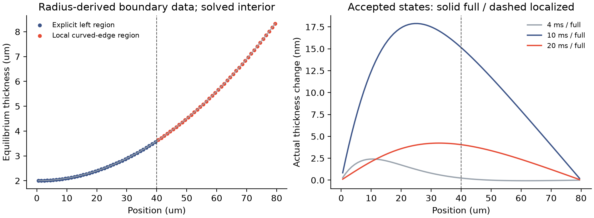
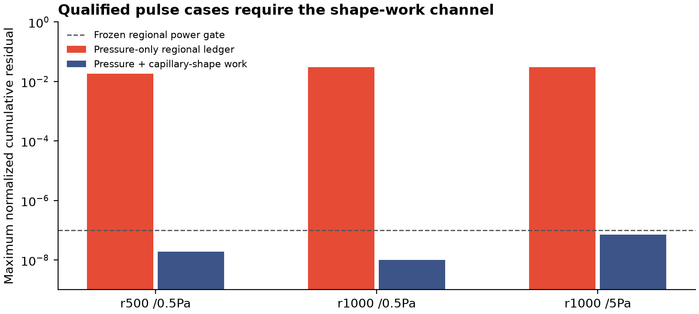
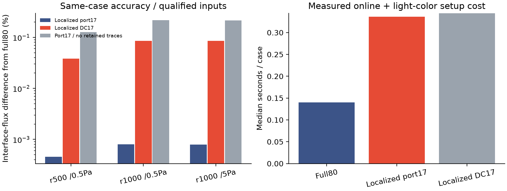
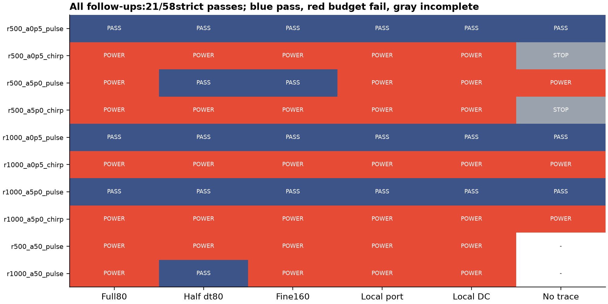

非线性边缘交换，
同时核对液量与毛细功。
左侧区域显式求解，右侧弯曲过渡条带分别使用完整或局部降阶状态。采用非线性面积能与随厚度变化的迁移率，直接检查内部接口，而不是只核对整体能量。
从平坦小信号推进到弯曲、非线性局部区
长度和宽度均80µm，左端厚度2µm；端点几何与基准压力来自500／1000µm半径，内部平衡态由变分条件求得。实际演化使用完整面积能和步内冻结的h³/(12µ)迁移率。0.5／5Pa的平滑脉冲与扫频，加上预先固定的50Pa挑战，不再只是几何与时间的相似缩放。大幅挑战出现约8%的厚度变化，但多数功检查未通过，仍归为未验证诊断。

接口需要记录两类功
跨接口液体有一份共享通量，压力功在两侧等大反向。由于毛细能依赖厚度梯度，接口厚度改变还会传递毛细形变功。后向欧拉的凸性损失单独记作数值损失，不能塞进物理黏性耗散。
ΔV_left = V_external,left − V_interface
ΔV_right = V_external,right + V_interface
所有能量和功采用一致的平衡态参照；区域能量由共享界面面的Bregman能各分一半定义。它不是未经说明的原始表面能减去区域储库势。形变功来自面能梯度和实际厚度增量，并非为补平残差添加的校正量。

局部降阶：保留区域液量和接口物理压力迹
左侧40个自由度仍完整求解；右侧状态上限17，保留区域液量方向与两端的边界体积迹，使非线性重构态的边界压力与物理能量导数一致。标准静态校正模态采用相同约束进行公平对照；无接口迹版本只作为消融。区域液量方向被保留，并不意味着每个重构单元逐一满足原有限体积连续方程；逐单元残差已在汇总中公开。

合格输入中，局部端口方案对匹配完整离散参照的最大接口通量差异低于0.00081%。但它在当前小型脚本上比带状完整求解更慢，尚无同精度成本优势；不能用状态数从80降到约57替代速度验证。较小通量差异也不能使功账本失败的输入变成合格结果。
完整验证矩阵与未通过项

独立采用8点Gauss积分重算58组保存场、3830个已接受步骤的非线性面积能、物理压力、端口通量及功，公式重算均通过；它不替代完整轨迹的严格门槛。扫频和大幅驱动主要是功残差超出10⁻⁷，部分发生在低能量阶段；本轮不再更改容差或重跑到通过。
| 输入 | 时间步减半通量差异 | 80→160网格差异 | 完整功账本资格 |
|---|---|---|---|
| r500_a0p5_pulse | 0.431% | 0.039% | 合格 |
| r500_a0p5_chirp | 0.761% | 0.018% | 功账本未通过 |
| r500_a5p0_pulse | 0.431% | 0.039% | 功账本未通过 |
| r500_a5p0_chirp | 0.769% | 0.018% | 功账本未通过 |
| r1000_a0p5_pulse | 0.325% | 0.047% | 合格 |
| r1000_a0p5_chirp | 0.431% | 0.015% | 功账本未通过 |
| r1000_a5p0_pulse | 0.325% | 0.047% | 合格 |
| r1000_a5p0_chirp | 0.436% | 0.015% | 功账本未通过 |
| r500_a50_pulse | 0.426% | 0.037% | 功账本未通过 |
| r1000_a50_pulse | 0.327% | 0.044% | 功账本未通过 |
失败处理与复现
最初48次尝试仅1次通过全部门槛。随后只做一次表示修正：直接演化相对平衡态的液量，使用有理化斜率差，避免近邻绝对厚度相减的舍入放大；物性、边界、基底和门槛均不变。两组原有完整算例的通量相对变化不超过4.89×10⁻⁸、厚度变化不超过2.17×10⁻¹³。所有原始和重放结果分开保留；原始48、重放48、大幅挑战10，共106次协议尝试。
接下来推进完整C1
- 将压力／液量及毛细形变功账本接入已有运动粒子膜，补上移动几何的功和材料输运。
- 保留表活量与接口两侧表面输运；本页没有这些状态，不能把缺失量记为“零误差”。
- 优先采用实际可负担的在线完整边缘；局部降阶须先证明同精度成本优势，再作为加速方案。
- 继续以独立边界通量、条纹轨迹和真实材料输入约束；无经验排液指数或动力学速率拟合。
原始记录与文献
- raw-part-001.zip · 2.27 MB · 44 files
- raw-part-002.zip · 2.39 MB · 84 files
- raw-part-003.zip · 2.53 MB · 16 files
- raw-part-004.zip · 2.60 MB · 18 files
- raw-part-005.zip · 2.72 MB · 17 files
- raw-part-006.zip · 2.70 MB · 18 files
- raw-part-007.zip · 2.64 MB · 18 files
- raw-part-008.zip · 2.63 MB · 18 files
- raw-part-009.zip · 2.68 MB · 18 files
- raw-part-010.zip · 2.69 MB · 18 files
- raw-part-011.zip · 2.51 MB · 16 files
- raw-part-012.zip · 2.73 MB · 17 files
分卷ZIP中的每个条目保留原始字节与路径；下载清单给出归档与逐文件SHA256。大资源由站点路由到该部署提交固定的公开Git副本。
方法与边界原理参考 Chaturantabut、Beattie与Gugercin2016：非线性保持结构降阶；Liu与Wu：带动态边界的能量变分框架。公开PDF已保存本地；不重新托管论文。
白底图均提供PNG和矢量PDF。全部本轮计算为秒级／分钟级有界任务，没有启动超过2小时的训练。完整目标保持开放。